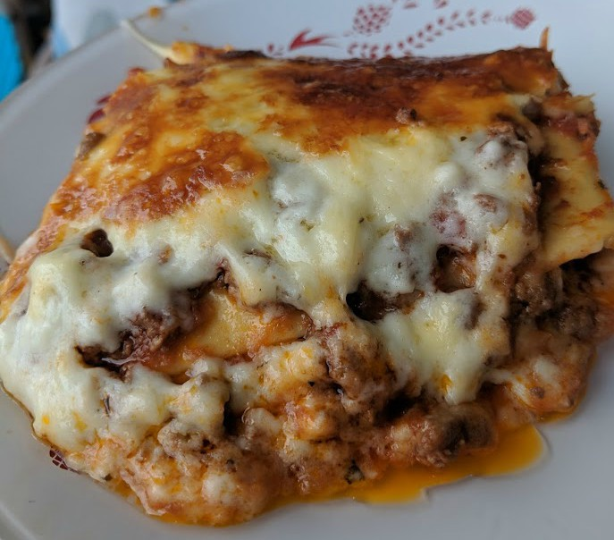

French Lasagna Recipe

Description
Lasagne, as a dish, originated from Italy. It is a type of pasta. This recipe is a French
twist on this Italian classic, created by someone who moved to France and learned it there.
Just don't show this to an Italian - they maybe very unimpressed!
Ingredients
- 9 lasagna noodles
- 1 pound ground beef
- ½ onion, diced
- ¼ cup diced green bell pepper
- 2 cloves garlic, minced
- 3 tablespoons butter
- 3 tablespoons all-purpose flour
- 1 cup milk
- ½ cup heavy whipping cream
- 1½ (8 ounce) cans tomato sauce
- ½ cup grated Parmesan cheese
- salt and ground black pepper to taste
- 1 pinch herbes de Provence
- garlic powder
- 2 cups shredded Swiss cheese
- 1 cup shredded mozzarella cheese
Steps
- Bring a large pot of lightly salted water to a boil. Cook lasagna noodles in the boiling
water, stirring occasionally until tender yet firm to the bite, about 8 minutes. Drain.
- Preheat oven to 350 degrees F (175 degrees C).
- Combine ground beef, onion, green bell pepper, and minced garlic in a large skillet
over medium heat; cook and stir until beef is no longer pink, 5 to 8 minutes.
- Melt butter in a saucepan over medium-low heat.
- Stir in flour; cook for 1 minute.
- Pour in milk and heavy cream.
- Cook, stirring frequently, until sauce thickens, about 5
minutes.
- Spread 1/4 of the tomato sauce in the bottom of a 9x13-inch baking dish.
- Cover with 3 lasagna noodles.
- Spoon 1/3 of the beef mixture over the noodles.
- Spread 1/4 of the tomato sauce and 1/3 of the white sauce over the beef mixture.
- Sprinkle Parmesan cheese, salt, pepper, herbes de Provence, and garlic powder on top.
- Cover with 1/3 of the Swiss cheese and mozzarella cheese.
- Repeat layers twice, starting with noodles and ending with cheeses.
- Bake lasagna in the preheated oven until top is deeply browned, 30 to 45 minutes.